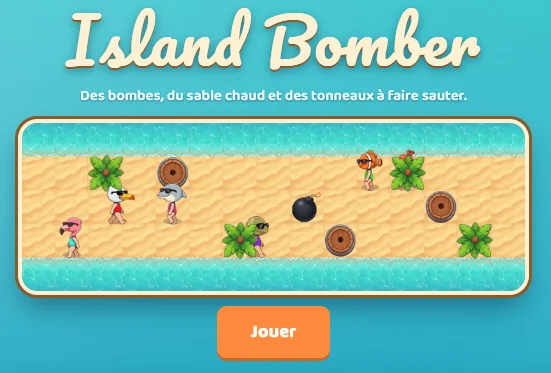
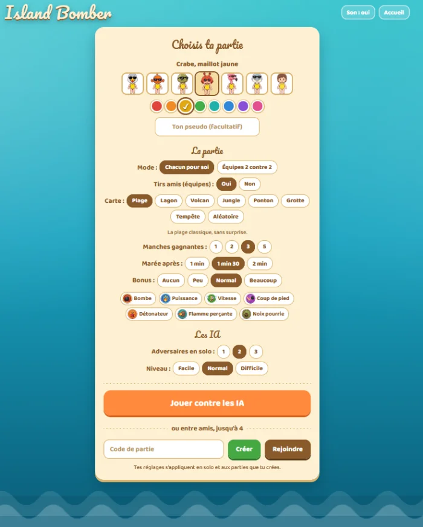

Island Bomber
Des bombes, du sable chaud et des tonneaux à faire sauter. Un jeu d'arcade dans l'esprit des classiques du genre : on pose des bombes pour ouvrir un chemin entre palmiers et tonneaux, et le dernier debout remporte la manche.
- Statut
- Jouable · solo et multijoueur
- Joueurs
- Solo contre 1 à 3 IA, ou jusqu'à 4 en ligne avec un code de partie
- Stack
- à préciser



Le jeu
Chaque joueur incarne un personnage de plage (crabe, poisson-clown, flamant rose…) sur une île quadrillée. On se déplace aux flèches, on pose une bombe avec Espace, et chaque explosion fait sauter les tonneaux, libère des bonus et peut piéger les adversaires. La marée monte au fil de la manche et resserre l'île : il faut finir avant d'être rattrapé par l'eau.
Une partie sur mesure
- Modes : chacun pour soi ou équipes 2 contre 2, tirs amis activables.
- Cartes : Plage, Lagon, Volcan, Jungle, Ponton, Grotte, Tempête, ou aléatoire.
- Rythme : 1 à 5 manches gagnantes, marée après 1 min, 1 min 30 ou 2 min.
- Bonus : bombe, puissance, vitesse, coup de pied, détonateur, flamme perçante, noix pourrie.
- IA : trois niveaux, facile, normal et difficile.
Direction artistique
Une esthétique de vacances : sable, lagon turquoise, palmiers et personnages en maillot, une interface en cartes crème et une typographie manuscrite pour le titre.
À compléter : contexte et intention du projet.